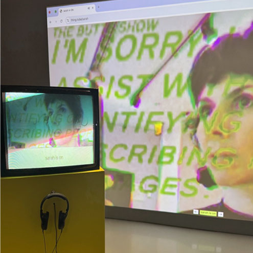

HUMAN IN THE LOOP is an experiential happening and performance in two parts. Part I, ENCODING, invited audience members to converse with strangers; their words were fed into a generative system that produced a unique script. Part II, DECODING, was a staged play in which improvisers performed the generated script on stage, acting as AI-reconstituted doubles of the audience. The performance was produced at CPR in collaboration with Yotam Mann and Tommy Martinez, and the book was designed with Han Zhang.

Sarah Rothberg is an interactive media artist and educator, creating playful, poetic, and usually a-bit-weird experiences that invite you to reconsider your relationships to the world around you. Rothberg's work engages with the impact of new technologies and communication tools, and takes many forms (ranging from installation to performance, software, video, writing, workshops, and experiments with technology). Rothberg is an Assistant Arts Professor at NYU (Interactive Telecommunications Program/Interactive Media Arts), a member of Onassis ONX Studio, and part of collaboratives: MORE&MORE UNLIMITED, which offers experiences for imagining changed worlds, and IS THIS THING ON? an artist-driven livestreaming collective.